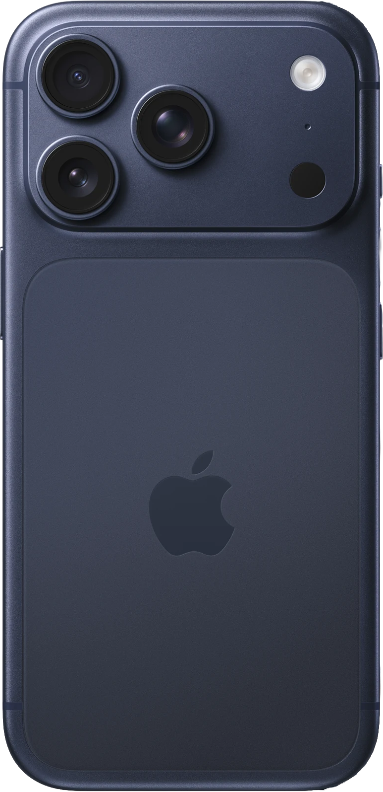

Jonah Kim
I am a Krakow-based photographer working across landscape, nature, architecture, and portraiture. My focus is restraint: light, timing, and framing over equipment.

iPhone as a constraint
I use iPhone intentionally. The limitations keep the work precise: a fixed lens, fast capture, and controlled exposure choices. Every series in this archive is made on the same device to keep the voice consistent.
One focal range, strong composition, no reliance on zoom.
Expose for highlights and preserve shape before color.
Small tonal adjustments, no heavy manipulation.
Every project follows the same capture and edit rules.

Start a project
Commissions, collaborations, and editorial inquiries.
Email Jonah